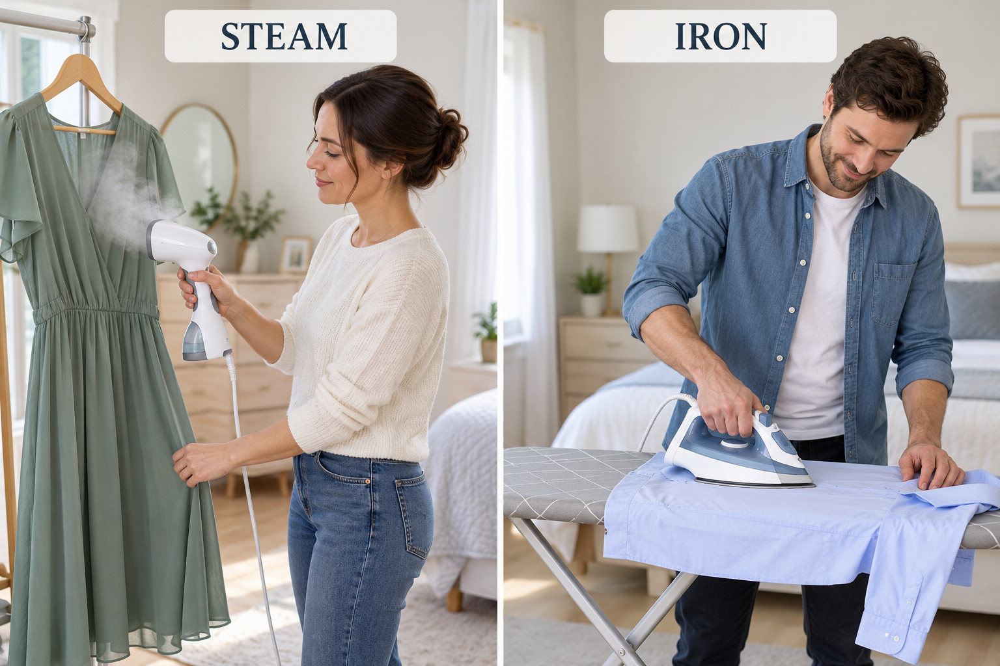

DRAFT · planned for 21 October Urban escapes Finish two missed Unit 2 blocks, then describe city places precisely and read travel opinions.
Unit 2 carry-over 15 min latest retrieval 7 min personal vocabulary 7 min Unit 3A Vocabulary & Reading 30 min
Carry-over · missed on 18.10 0 · Bring useful words back Complete the sentences. There is one extra phrase . Click a phrase when you use it; then use the phrase left over in your own sentence.
at the age of deal with generous ingredient look after plenty of quietly until in a hurry
1. Her neighbour is very
: she often gives clothes to people who need them.
Hint A kind person who is happy to give or share.
2. Their neighbour agreed to
the dog for the weekend.
Hint Take care of a person, animal or thing.
3. Lawyers often have to
urgent problems.
Hint Take action to solve or manage something.
4. We have
time, so we don’t need to rush.
Hint More than enough.
5. Lentils are the main
in this soup.
Hint One of the foods used to make a dish.
6. People should speak
while the court hearing is in progress.
Hint In a way that makes little noise.
7. She continued horseback riding
2011.
Hint Up to a particular time.
8. He started primary school
seven.
Hint Use this phrase before a number to say how old someone was.
Check
Use the extra phrase: Make one clear, true sentence.Optional notes
Personal vocabulary · report from 18.10 3 · Steam or iron? Look at the actions first. Then open the language support.

steam clothes Use hot steam while the clothes are hanging.
Russian отпаривать одежду
iron a shirt / an iron Move a hot iron over clothes on an ironing board.
Russian iron a shirt — гладить рубашку; an iron — утюг
Quick choice: Your dress is hanging up and has a few creases. What can you do?
steam it iron it on a board
Quick choice: Your cotton shirt is on an ironing board. What can you do?
steam the curtains iron it
Check
Speak: Do you usually iron clothes, steam them or do neither?
Roadmap A2+ SB p.22 · Ex.1–2 · adapted for a student without the book 4 · What kind of place is it? Sort the adjectives. The words stay visible at the top while you work. Click a word after you write it in a column.
beautiful cheap clean crowded dirty exciting interesting lively modern noisy old peaceful popular touristy
touristy usually has a negative meaning: a place has changed too much for tourists.
Russian support туристический в плохом смысле: слишком много туристов, сувенирных магазинов и неаутентичных мест
Speak: What can you see in the two places? Which adjectives fit the market, the park or both?Optional notes
Roadmap A2+ SB p.22 · Ex.3a · adapted with new contexts 5 · Choose the precise adjective Choose the one adjective that makes each description clear.
1. The night market is full of music, conversation and people. It feels
peaceful lively dirty
2. We picked up our rubbish, so the picnic area stayed
clean crowded touristy
3. Almost every table was taken and people were waiting outside. The café was
modern crowded cheap
4. There were no cars, shops or loud groups near the lake. It was very
popular exciting peaceful
Check
Speak: Which place sounds best for you today? Why?
Roadmap A2+ SB p.22 · Ex.4a–b · adapted 6 · Travel forum: read for the main idea Everything you need is below. Read the two adapted forum posts quickly. Which writer recommends a market? Which writer recommends beaches?
Rebecca: Camden Market is one of my favourite places in London. It can get very crowded, but the area is lively and there are plenty of interesting stalls. If you prefer somewhere calmer, try a smaller market a little further away.
Pedro: Rio has several beaches with different atmospheres. Barra da Tijuca is long and lively. Prainha and Grumari are a few kilometres outside the centre; they are peaceful, clean and beautiful.
1. Camden Market is always quiet and empty.
True False
Support Find the sentence about how many people are sometimes there.
2. The area around Camden Market has a lot of energy.
True False
Support Look for an adjective meaning active, energetic and full of people.
3. Prainha is in the centre of Rio.
True False
Support Does the writer say it is near, in, or away from the centre?
4. Barra da Tijuca has a long beach and an active atmosphere.
True False
Support Check the description of the beach and the word lively .
5. Prainha and Grumari are outside central Rio.
True False
Support Find the phrase with a distance in kilometres.
Check
Roadmap A2+ SB p.22 · Ex.4c · personalised speaking 7 · Choose an urban escape You have one free afternoon. Choose Camden Market , Barra da Tijuca , Prainha or Grumari . Explain your choice with three details.
I’d choose … It sounds … You can … there. I wouldn’t choose … because …
Follow-up questions: Optional notes